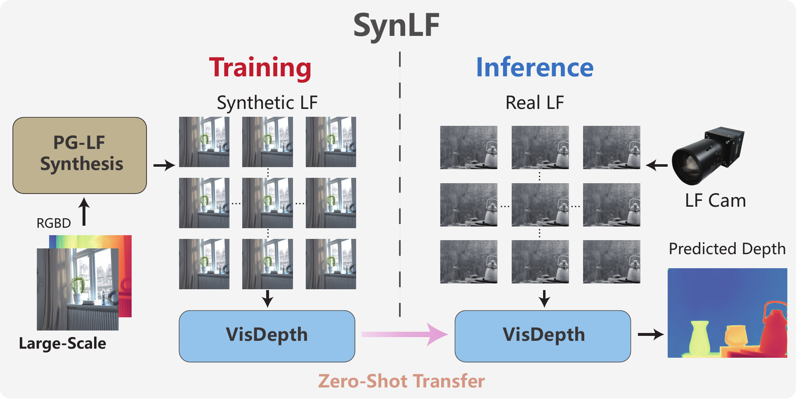
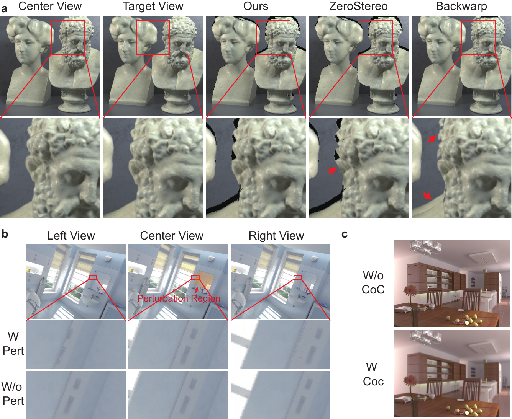
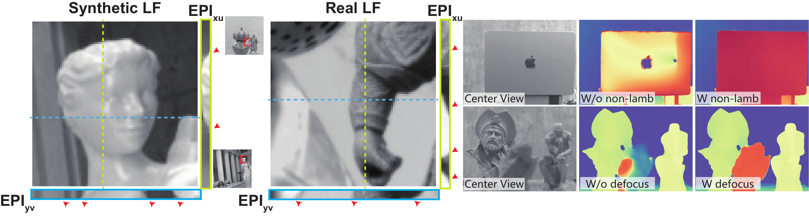
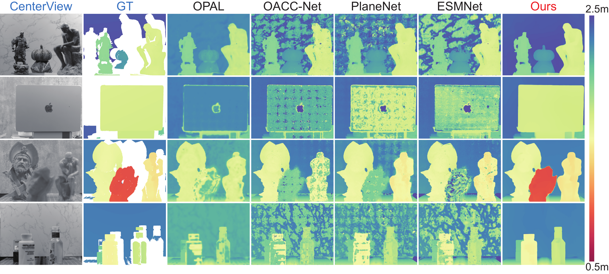
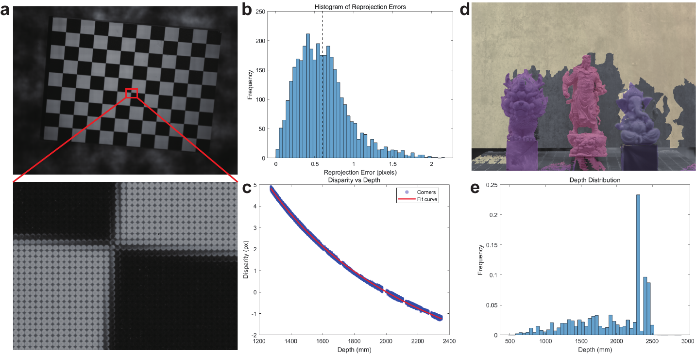
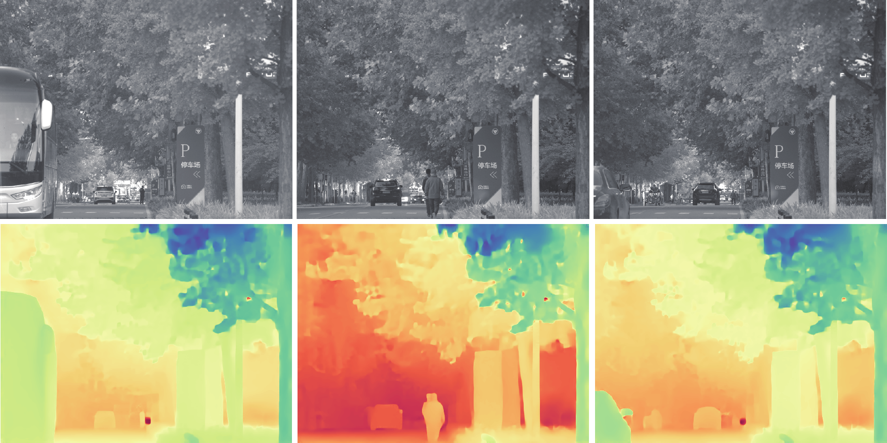

Train on synthesized light fields. Infer directly on real captures.

PG-LF supervision transfers directly to real captures without fine-tuning.
Overview
Metric depth without collecting a massive light-field dataset
Monocular depth is scale-ambiguous, while learned light-field depth is constrained by scarce real supervision and brittle photometric assumptions. SynLF addresses both sides of the problem: PG-LF synthesizes geometry-consistent supervisory light fields on the fly from RGB-D, and VisDepth explicitly recomputes multi-view visibility while refining disparity.
At inference, the trained model is applied directly to real captures. No target-camera fine-tuning or test-time adaptation is used.
The training and inference paths share the same geometric core: depth-aware projection. It creates supervisory views in PG-LF and exposes valid observations to VisDepth at every refinement step.

PG-LF synthesis models the imaging effects that most directly break disparity correspondence.
01 PG-LF synthesis
Scalable supervision from RGB-D
Depth-aware forward splatting preserves visibility at occlusion boundaries. Depth-dependent defocus and non-Lambertian perturbations expose the model to correspondence failures that matter on real light-field cameras.
02 VisDepth
Explicit visibility at every iteration
A frozen monocular prior stabilizes ambiguous matching without supplying metric scale. Vis-Proj recomputes per-view visibility from the evolving disparity, and visibility-weighted costs drive 24 ConvGRU updates.
Why the synthesis transfers
Preserve geometry, perturb the brittle appearance cues

Synthetic and real light fields retain comparable disparity-induced EPI structure. The two capture-aware terms target reflective surfaces and strong defocus.
Zero-shot results
Cleaner metric depth across real capture failures
SynLF is evaluated on 173 annotated indoor captures spanning weak texture, reflective metal, strong defocus, and semi-transparency. All methods use the same valid structured-light pixels.
30.05MAE (mm)
Best listed prior, PlaneNet91.31 mm
Same VisDepth architecture, HCI supervision52.95 mm

Four difficult regimes: weak texture, specular metal, semi-transparency, and strong defocus. White ground-truth pixels are sensor-invalid; red is near and blue is far.
Data contribution. Replacing HCI supervision with PG-LF improves PlaneNet from 91.31 to 53.11 mm MAE.
Architecture contribution. Under identical PG-LF supervision, VisDepth improves 53.11 to 30.05 mm MAE.
Capture modeling. Defocus and non-Lambertian terms jointly improve 50.01 to 30.05 mm MAE.
Real-world benchmark
Metric ground truth from a calibrated 9×9 light-field camera
Our custom acquisition system pairs an industrial light-field camera with a high-precision structured-light sensor. Calibrated reprojection provides metric center-view depth over 0.5–2.5 m.
173 annotated indoor captures for quantitative evaluation
30 outdoor captures for qualitative evaluation
Diffuse, specular, transparent, reflective, and textureless surfaces

Calibration, structured-light alignment, and the captured depth distribution.
Beyond the annotated indoor benchmark
Stable qualitative transfer to outdoor captures

Outdoor predictions remain spatially coherent under broader appearance and depth variations; these captures do not have ground-truth depth.
Presentation
Five-minute ECCV overview
Current scope
What SynLF models today
Covered. Visibility, depth-dependent defocus, and non-Lambertian appearance perturbations for static light-field depth estimation.
Evaluation. Quantitative results focus on static indoor scenes and valid structured-light pixels; outdoor results are qualitative.
Next. Richer optical models, dynamic scenes, and broader physics-grounded supervision for light-field perception.
Citation
BibTeX
@inproceedings{cao2026synlf,
title = {SynLF: Zero-Shot Metric Depth from Light Field Cameras via Physics-Grounded Synthesis},
author = {Cao, Zhexuan and Guo, Yuduo and Ding, Peisheng and Shi, Zhan and Qiao, Hui},
booktitle = {European Conference on Computer Vision (ECCV)},
year = {2026}
}